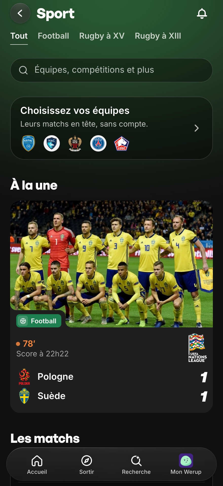

Captures de la vraie application en ligne (werup.app), iPhone Pro Max, le 17/11 à 22 h. Ouvrir Werup
L'accueil, en directCarte plus large, photo nue. La capsule « Football » dans la découpe. Le direct en orange, les scores dans la police de Werup.On fait glisser« Rugby à XV » en bleu, « Football » en vert. Le jour d'abord, l'heure en petit. Le logo de la compétition en grand, sans rien sur les joueurs.La page Sport« À la une » prend la même carte, en grand. Tout est au vouvoiement : « Choisissez vos équipes ».

La page de l'USAPLes mêmes cartes pour ses matchs, le score en grand.